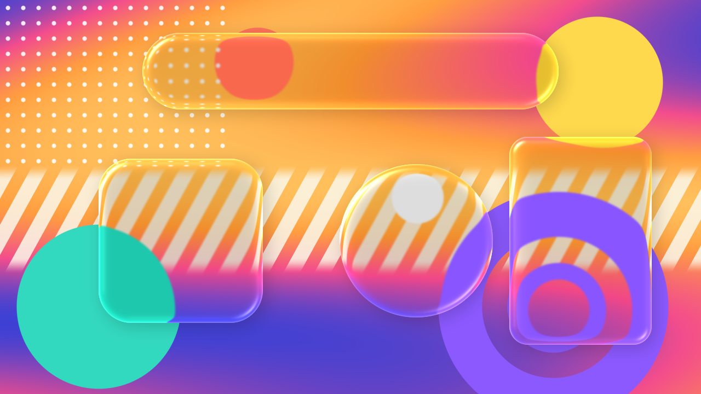
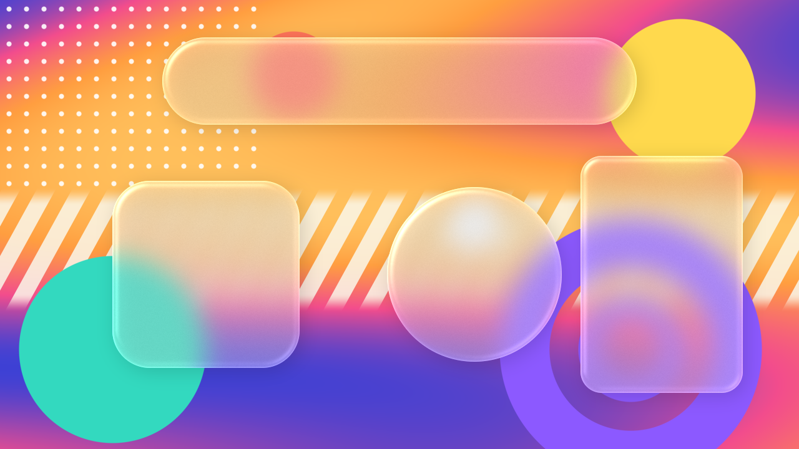
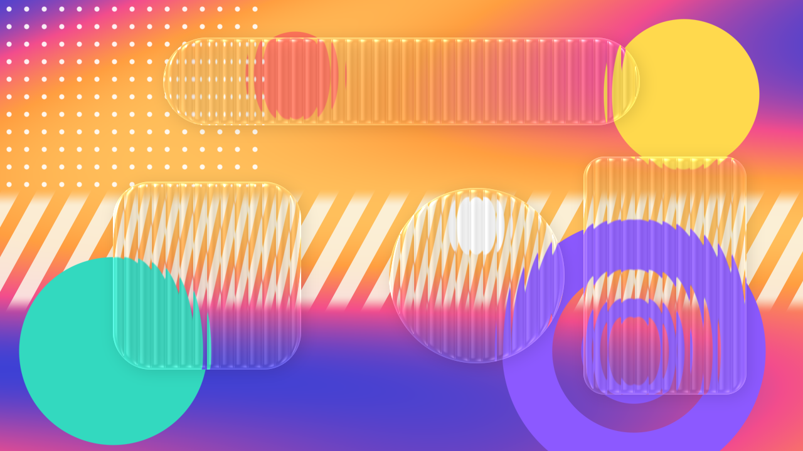
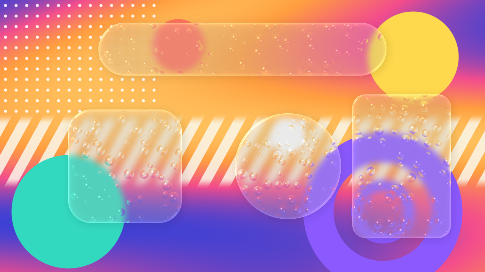
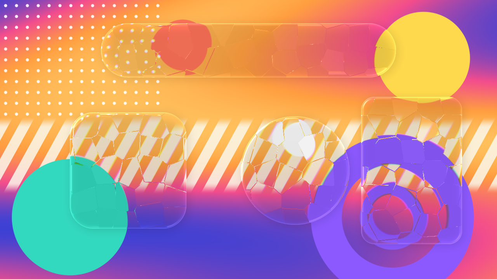
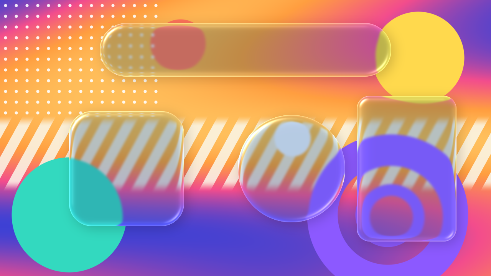
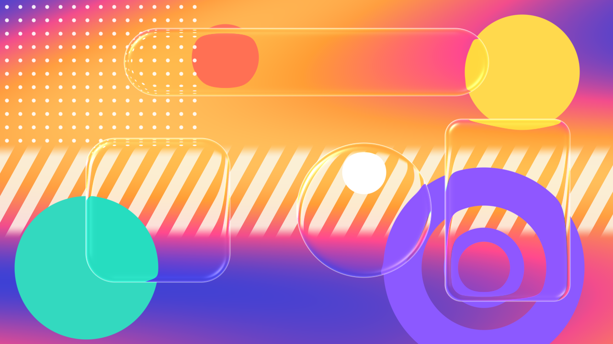

REFRACTLAB
Turn your shape layers into glass inside After Effects
Windows isn't available yet.
RefractLab turns a shape layer into a pane of glass. Apply the RefractLab effect to a shape layer and everything below it bends through the glass: no precomps, no background layer to set up. Go for Apple-style Liquid Glass, frosted glass, or textured glass, and animate the shape any way you like.







- Turn any shape layer into glass that refracts every layer below it
- Liquid Glass, with highlights where rounded corners catch the light
- Frosted glass: control the blur and the strength and color of the frost
- Textured glass: 9 built-in reliefs (Reeded, Fluted, Waves, Ripple, Hammered, Rain, Glass Blocks, Facets, Noise) or any layer of your own
- Start from 13 built-in presets
- Tint, saturation, a soft shadow, and an optional hairline stroke
- Move, scale, rotate, and animate the shape's path freely
- 8, 16 and 32-bit color, multithreaded
- Install — run the installer. It needs an administrator password, since After Effects plug-ins live in a shared folder.
- Start (or restart) After Effects.
- Select a shape layer and apply Effect → RefractLab → RefractLab. Leave Background Layer at None: the shape turns to glass over everything below it.
- Pick a look from the Preset menu at the top of the effect, then fine-tune the Bevel, Frost, Texture and Highlights settings.
- Want just one layer behind the glass? Set it as Background Layer.
Need the exact composite below?
On its own, RefractLab stacks the layers below with their opacity and the Normal, Add, Screen and Multiply blend modes; track mattes, 3D depth and adjustment layers below it are left out. To refract exactly what After Effects draws, put an adjustment layer above everything, apply RefractLab to it, and set Shape Layer to a (hidden) shape layer.
The installer isn't signed yet
If macOS says the installer can't be opened, right-click it and choose Open. On macOS 15 and later, open System Settings → Privacy & Security instead and click Open Anyway.
The plug-in installs to
/Library/Application Support/Adobe/Common/Plug-ins/7.0/MediaCore/RefractLab.
To uninstall, delete that folder.
After Effects on macOS 12 or later, Apple Silicon or Intel. Developed and tested on After Effects 2026; earlier versions haven't been tested. Everything runs locally: no accounts and no network calls.